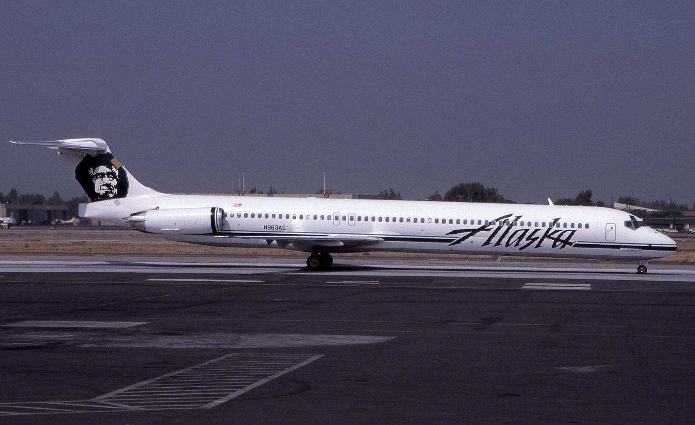
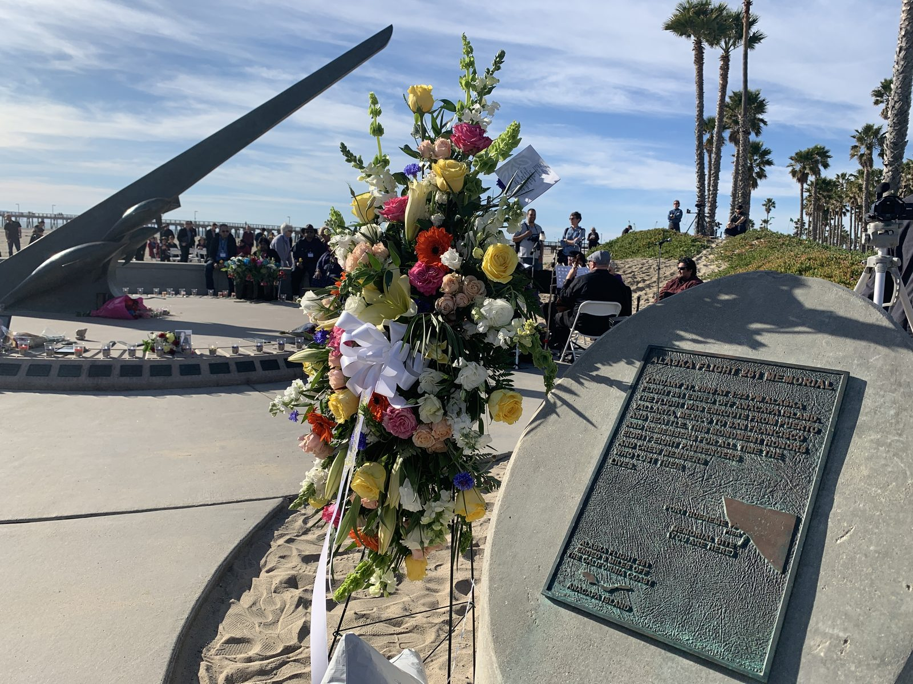

A holiday charter home from Mexico. Two pilots at the end of a long duty day, working a stuck trim problem the way you would work any stuck trim problem — unhurried, by the book, talking it through with maintenance. What neither of them knew was that a single nut in the tail had been quietly grinding itself to nothing for years, and that when it finally let go there would be no version of this flight that ended on a runway.
All times in this case file are Pacific Standard Time, the local time along the California coast where the flight ended.

Flight 261 left Puerto Vallarta at 13:37 on the afternoon of January 31, 2000, bound for San Francisco and then Seattle. Aboard were 83 passengers and five crew: many of them Alaska Airlines employees and their families returning from a Mexican holiday, which is why so many of the dead knew each other.
Captain Ted Thompson, 53, and First Officer Bill Tansky, 57, were both highly experienced MD-80 pilots. In the cabin were flight attendants Kristin Mills, Craig Pulanco and Allison Shanks.
Somewhere in the climb, the horizontal stabilizer — the small wing at the tail that sets the aircraft's pitch trim — stopped moving. It jammed at roughly a quarter of a degree nose-down, and neither the primary nor the alternate trim system would shift it. The crew levelled at 31,000 feet holding the nose up with control column force, and started working the problem.
What follows is one of the most quietly unnerving stretches of any cockpit voice recording. For the better part of half an hour, nothing dramatic happens. Thompson and Tansky run through their options, talk to Alaska Airlines maintenance in Seattle and to dispatch in Los Angeles, and weigh whether to continue to San Francisco or divert to LAX. They discuss the weight of the aircraft and the passengers in the back. They are calm, professional, and completely unaware that the component they keep trying to move has already destroyed itself.
It just blew up on us… we're in a dive here. Not a dive yet, but we've lost vertical.
— Cockpit voice recorder, shortly after the first uncommanded dive, ~16:10 PSTTo understand this accident you need to understand one part, and it is a genuinely simple one. A threaded steel rod turns inside a soft brass nut. The nut travels up and down the rod. The nut is attached to the tail. That is the whole mechanism.
The NTSB determined that approximately 90 percent of the thread inside the acme nut had already worn away before Flight 261 ever left the ground. The measured wear rate on this assembly was about 0.012 inches per 1,000 flight hours — roughly twelve times the 0.001 inches per 1,000 hours the design anticipated. The cause of that wear was insufficient lubrication.
Over the preceding fifteen years, Alaska Airlines had progressively extended how often the jackscrew was greased and how often its wear was measured, each extension approved by the FAA. A task originally performed every few hundred flight hours had been stretched to thousands. As at Kegworth, no single decision in that chain looks negligent on its own. Every extension was individually defensible. Together they removed the only two defences this part had.
The wear was supposed to be caught by an “end-play check,” which measures how much the nut can move along the screw. The last such check on this aircraft, in September 1997, returned a reading within limits. The NTSB questioned whether that measurement had been performed accurately, noting the tooling and technique left considerable room for a bad result to look like a good one.
When the acme nut threads failed completely, nothing else in the design prevented the jackscrew from pulling free and the stabilizer from swinging to its physical stop. The NTSB found the absence of any fail-safe mechanism to be a contributing factor in the accident, and said so plainly.
At 16:09 the jackscrew let go for the first time. What happened over the next twelve minutes is why pilots still study this recording.
The stabilizer breaks free of its jam and runs to a nose-down position. The aircraft pitches over and falls to somewhere between 23,000 and 24,000 feet in about eighty seconds. Both pilots haul back on the control columns and, remarkably, stop it.
The crew stabilise the aircraft and keep flying it, holding the nose up against a stabilizer that is now working against them. They declare an emergency, discuss the aircraft's condition with air traffic control and with company dispatch, and set up for Los Angeles. Their voices do not change.
The remaining acme nut threads fail completely. The jackscrew pulls free at the top, and the stabilizer swings to its full nose-down travel. There is no combination of control inputs that recovers from this. The aircraft pitches over from roughly 17,000 feet.
The MD-83 rolls onto its back. Thompson and Tansky keep flying it. The cockpit voice recorder captures the two of them working the problem out loud, in the present tense, against an aircraft that is upside down and descending — and finding that inverted, it is momentarily more controllable than it was the right way up.
Flight 261 strikes the Pacific Ocean about 2.7 miles north of Anacapa Island, off Point Mugu on the California coast. All 88 people aboard are killed.
Push and roll, push and roll… okay, we are inverted, and now we've got to get it…
At least upside down we're flying.
There is no panic anywhere on the tape. There is no screaming, no argument, no moment where either pilot stops working. What the recorder captured instead was two men methodically running out of options and continuing to fly anyway, narrating to each other what the aircraft was doing so that they could keep trying to answer it. That recording is played in airline training rooms to this day, and it is not played as an example of what went wrong. It is played as an example of what professional flying sounds like at the absolute limit.
The National Transportation Safety Board adopted its final report, NTSB/AAR-02/01, in December 2002. Its probable cause statement is unusually direct about where responsibility sits.
A loss of airplane pitch control resulting from the in-flight failure of the horizontal stabilizer trim system jackscrew assembly's acme nut threads. The thread failure was caused by excessive wear resulting from Alaska Airlines' insufficient lubrication of the jackscrew assembly.
— National Transportation Safety Board, Probable Cause, NTSB/AAR-02/01The Board then listed what it found to have contributed. Alaska Airlines' extended lubrication interval, and the FAA's approval of that extension, which increased the likelihood that a missed or inadequate lubrication would result in excessive wear. Alaska Airlines' extended end-play check interval, and the FAA's approval of that extension, which allowed the excessive wear to progress undetected. And the absence of any fail-safe mechanism to prevent the catastrophic effects of total acme nut thread loss.
Read those together and the shape of the accident is clear. This was not one bad decision on one afternoon. It was a slow, procedural, entirely paperwork-shaped failure that took fifteen years, involved an airline optimising its maintenance costs and a regulator signing off each optimisation in turn, and ended with two pilots being handed an aircraft that could not be flown and doing the best anyone has ever done with one.
The mechanical cause of Alaska 261 is not in dispute. Almost everything about the human story around it still is.
No — and this is the most persistent myth about this case. The MD-83 rolled inverted on its own during the final upset, as a consequence of losing pitch control, not as a manoeuvre anyone chose. What the crew then did was remarkable enough without the embellishment: they kept flying the aircraft in that attitude and observed, correctly, that it was momentarily more controllable upside down. That is a crew adapting to a situation, not a crew attempting an aerobatic repair.
The crew were actively discussing exactly this when the first dive happened, and they were being advised by company dispatch at the time. The NTSB did not find their decision-making to be causal. The uncomfortable truth is that a jammed stabilizer at cruise altitude is not, on its face, an emergency requiring an immediate landing — and there was no indication available to them that the part was moments from disintegrating.
The NTSB questioned the accuracy of the measurement but did not conclude it was deliberately falsified. Separately, an Alaska Airlines maintenance supervisor named John Liotine had raised concerns about the airline's maintenance practices to the FAA before the crash, and a federal investigation of the airline's maintenance operation followed the accident. It ended without criminal charges against the airline.
Almost certainly, yes — and that is the finding that should be uncomfortable. The NTSB explicitly listed the lack of a fail-safe as contributing. A mechanism that caught the stabilizer when the nut failed would have left the crew with a jammed tail and a difficult landing, which is a survivable afternoon. Instead they got an aircraft with no pitch control at all.
Every MD-80 series aircraft still flying, and a great deal of the paperwork governing how any airline is allowed to stretch a maintenance interval, changed because of Flight 261.
Lubrication and end-play check intervals for the MD-80 jackscrew assembly were shortened and made mandatory by airworthiness directive, reversing years of incremental extensions. Inspection technique and tooling requirements were tightened alongside them.
The NTSB's criticism landed squarely on the FAA for approving each extension without adequate technical justification. The oversight process for carrier-proposed maintenance interval changes was overhauled as a direct result.
The finding that a single worn nut could remove all pitch control from an airliner prompted a broader re-examination of unmonitored single-point failures in flight control systems across the transport fleet.
A memorial sundial stands on the beach at Port Hueneme, California, facing the water where the aircraft came down. It carries the names of all 88 people aboard, and families of the victims still gather there every January 31.

Every fact in this case file was cross-referenced against at least two independent sources, anchored by the official government investigation. All links open in a new tab.
The National Transportation Safety Board's complete final report, including the probable cause, all contributing factors, the maintenance history of the jackscrew assembly and the full CVR transcript.
The complete public investigative docket — factual reports, group chairman studies, photographs and exhibits collected during the investigation.
The formal recommendations issued to the FAA as a result of this accident, covering lubrication intervals, end-play checks, inspection procedures and fail-safe design.
The Board's own news and materials page for the investigation, including the announcement of the probable cause findings.
Alaska Airlines' hometown paper on the victims, the families and the memorials, twenty years on.
The city's official page for the memorial described in this case file, including its design and the names it carries.